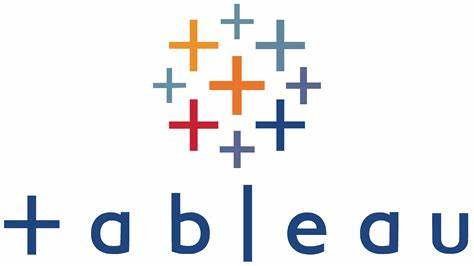
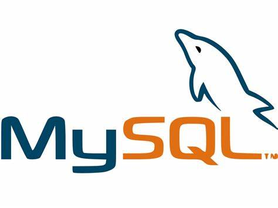

In this project, I visualize and derive insights from a dataset comprising over 5,000,000 commercial airline flights in the year 2015. The project involves utilizing Power Query for data cleaning and transformation, and Power BI for creating interactive visualizations and dashboards.
.

This data analysis project aims to segment our customer base to better understand their behavior and preferences. By analyzing historical transaction data, customer information, and customer interactions,that will help us tailor strategy for more profit and sales. The project will involve data cleaning, exploratory data analysis, clustering techniques, and visualization to derive actionable insights.

In this project, I conduct a basic exploratory data analysis of the features of Unicorn Companies using Python. I aim to derive data-driven recommendations to assist Unicorn Companies in developing robust business models and making informed decisions. The recommendations will focus on identifying companies with high growth potential, diversifying the investment portfolio, and prioritizing companies with experienced leadership teams..

This project demonstrates my proficiency in working with real-world data by utilizing SQL queries to analyze and comprehend the dataset. The goal is to gain valuable insights from the data and extract meaningful information from the Adventures Works database.

I convert intricate data into engaging visual displays by organizing and refining the data, crafting interactive dashboards using Tableau to provide valuable insights for informed decision-making.

In this project, I wrote different query to answer various questions raised by the management team needed for making business case decisions.
This project entails conducting exploratory analysis on a US census dataset. It begins with delving into the datasets, uncovering patterns, pinpointing outliers, and grasping the relationships among variables.